Patient app
The hospital, in the patient's pocket.
The Ophia app is built on the same record the hospital uses. What the front desk books, the optometrist measures and the doctor prescribes is what the patient sees, with nothing typed twice.
- Sign in with a mobile number and a one-time code. No password to forget.
- One number, the whole family: parents look after their children's records, and adult children their parents'.
- Available in English and Malayalam for emergency guidance and eye-care guides.
Screens
Every screen a patient uses.
Scroll sideways through the app. Click a screen to see it full size.
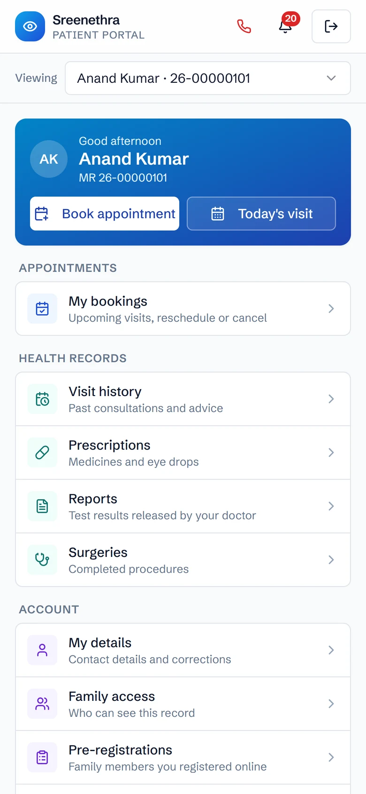
Home
Booking, today's visit, records and family in one place.
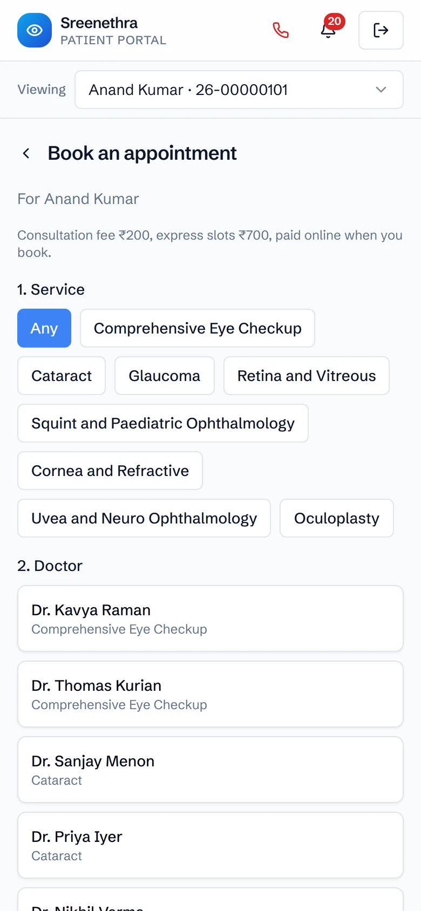
Book a visit
Pick a service and a doctor, then a free slot. Regular and express slots, with the fee shown up front.
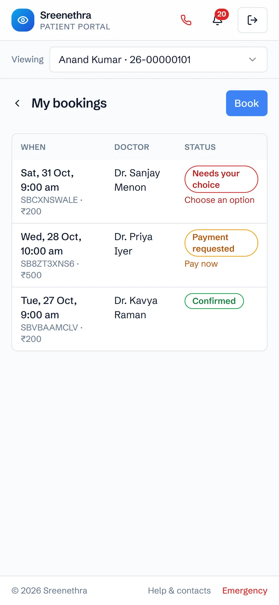
Bookings and payments
Pay online when booking, reschedule or cancel, and see refunds as they happen.
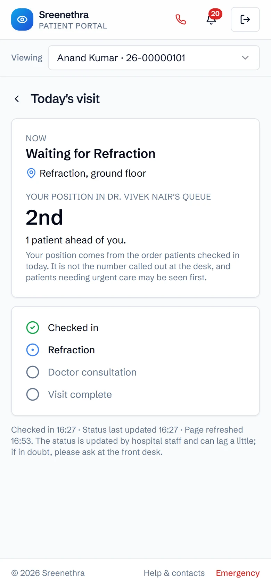
Today's visit
The step they're at (check-in, refraction, the doctor) and how many patients are ahead.
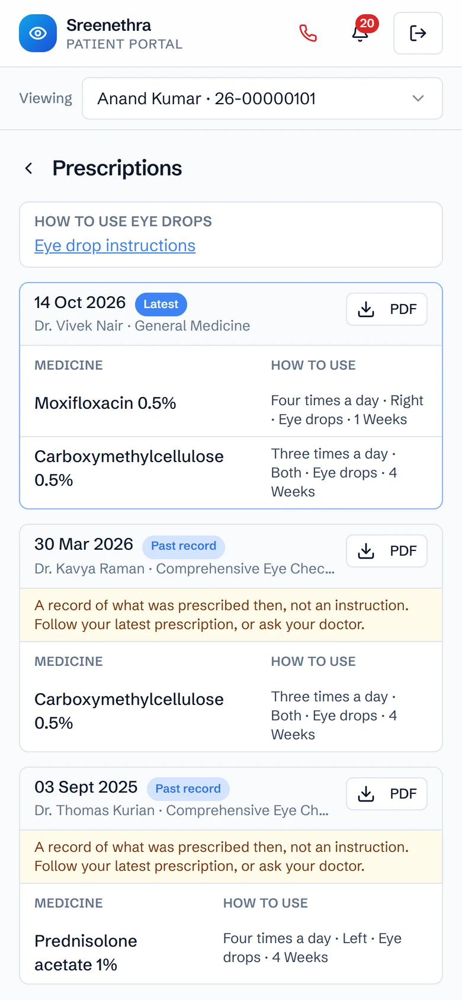
Prescriptions
Every prescription with how to use each drop, past ones clearly marked, and a PDF to keep.
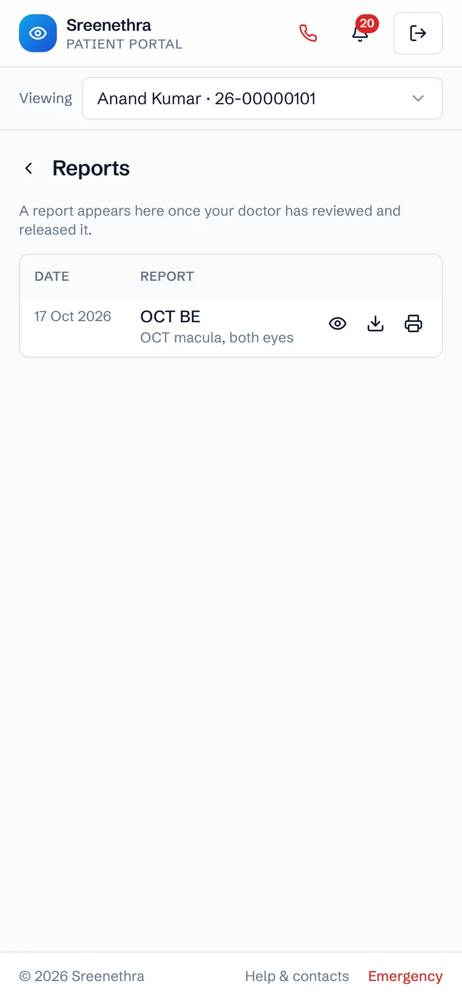
Reports
Scans and test reports appear once the doctor has reviewed and released them.
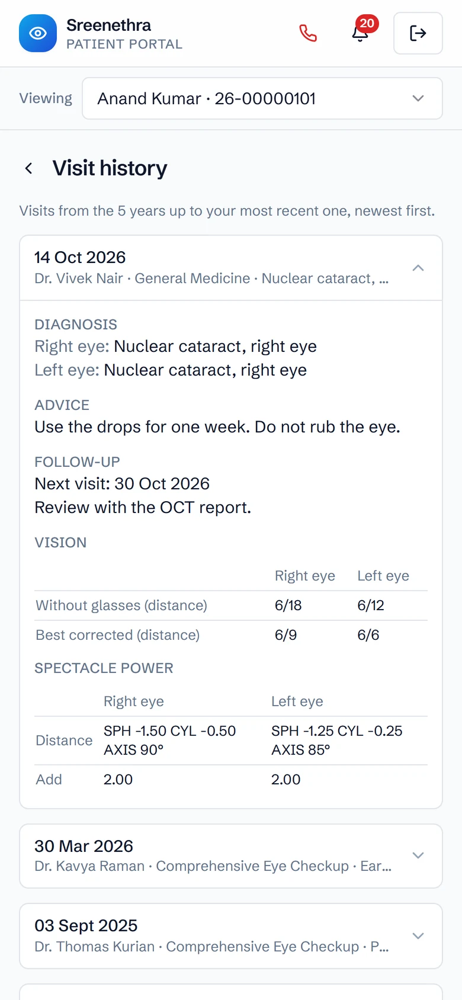
Visit history
Each visit's diagnosis, advice, follow-up date and spectacle power for both eyes.
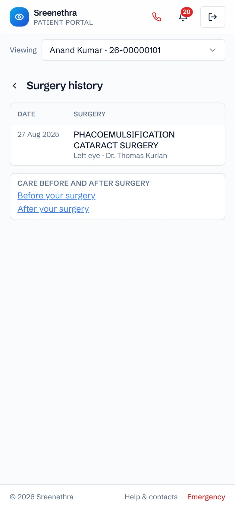
Surgeries
Past surgeries for each eye, with care guidance for before and after.
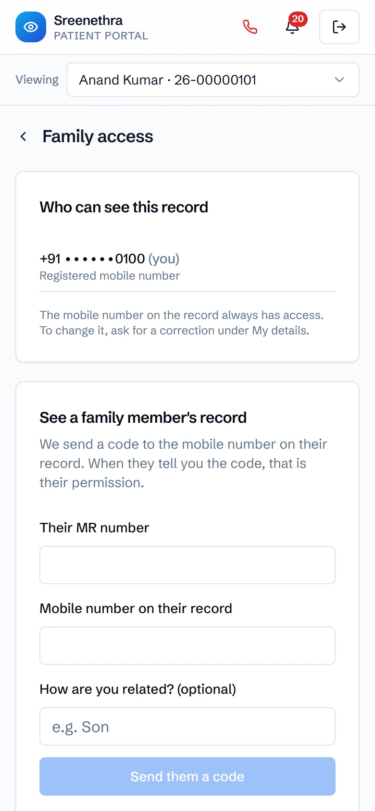
Family access
Add a family member's record with a code sent to their phone. Their permission, given in seconds.
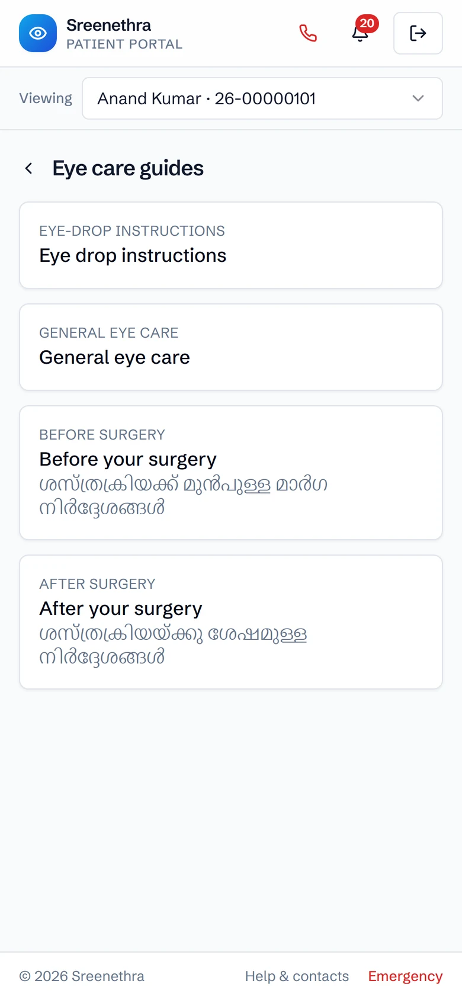
Eye-care guides
How to put in eye drops, and what to do before and after surgery.
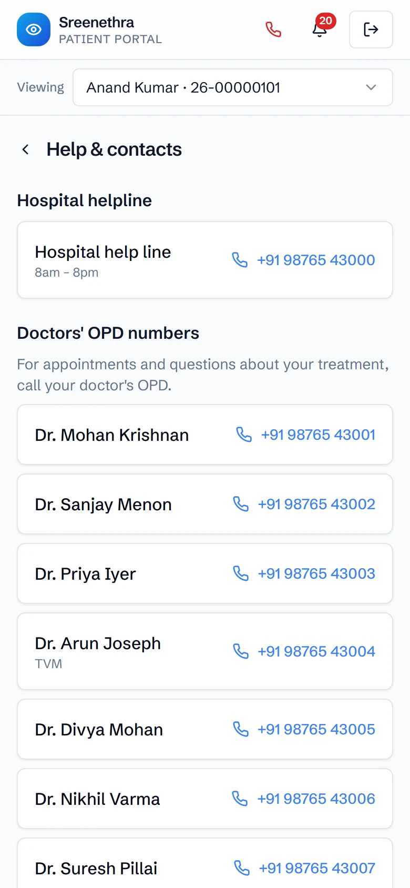
Help and contacts
The helpline and each doctor's OPD number, one tap to call.
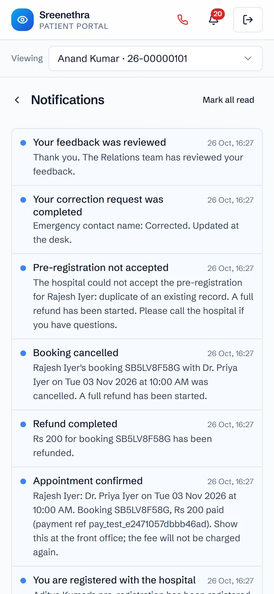
Notifications
Booking confirmations, payment and refund updates, and follow-up reminders.
For the hospital
The app takes work off the front desk.
Fewer phone calls
Patients book, reschedule and check their place in the queue themselves.
Registration done before arrival
New patients fill in their details at home; the desk checks and approves them in one step.
Payments reconciled
Online payments are matched to bookings, with refunds tracked on the same screen.
Reports released by the doctor
Nothing reaches the patient until the doctor has reviewed it, and overdue reports are flagged.
Corrections by request
Patients ask for a change to their details, and the desk approves it before the record changes.
Follow-up reminders
Patients are reminded when a follow-up is due, so fewer of them drop out of care.

The staff side
One desk screen for everything patients do online.
Pending registrations, corrections, family links, bookings, online payments and overdue reports, each with a count of what needs attention.